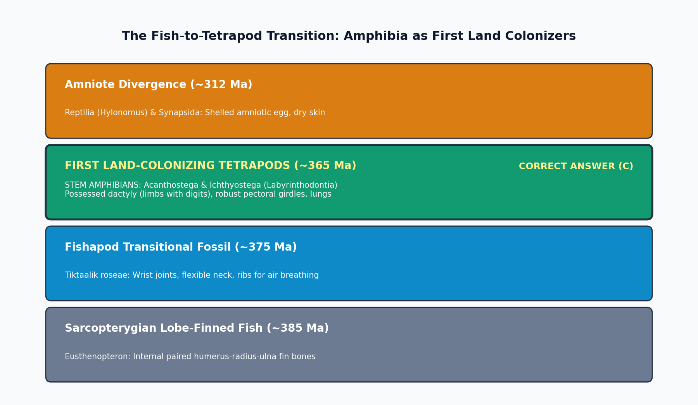

The evolutionary water-to-land transition during the Late Devonian Period (~375 - 360 Ma) represents one of the greatest adaptive milestones in the history of vertebrate life. Among the major vertebrate groups, the first group of tetrapods (four-limbed vertebrates) to successfully colonize the land were the Amphibia (specifically primitive stem-amphibians belonging to the Labyrinthodontia / Stegocephalia).

| Tetrapod Class | First Geological Appearance | Primary Ancestral Stock | Key Terrestrial Evolutionary Innovation | Reproductive Constraint |
|---|---|---|---|---|
| Amphibia | Late Devonian (~365 Ma) | Osteolepiform Sarcopterygii (*Tiktaalik*) | First dactylic walking limbs, lungs, pectoral girdle | Must return to water to lay anamniotic jelly-eggs |
| Reptilia | Late Carboniferous (~312 Ma) | Anthracosaurian Amphibians | Cleidoic amniotic egg, keratinized waterproof scales | Fully terrestrial; internal fertilization |
| Mammalia | Late Triassic (~210 Ma) | Cynodont Therapsids (Synapsida) | Endothermy, hair, mammary glands, single dentary bone | Viviparity (placentals/marsupials) & monotremes |
| Aves | Late Jurassic (~150 Ma) | Coelurosaurian Theropod Dinosaurs | Feathers, powered flight, hollow pneumatic bones | Hard calcified amniotic eggs; parental brooding |